- 주최·상금
- 하남시 · —
- 마감
- 10/7(수)
- 제출
- 9/28(월) · 이메일 (하남시 기획조정과 접수, 주소 미기록)
- 응모작
- 철도 개통 전까지 출근길을 지킨다 — 하남 '출근버스 혼잡 신호등' 30일 대응제
- 요지
- 출근버스 혼잡을 기준치로 신호화해 30일 안에 증차·배차 조정으로 대응하는 교통 제안. 🏆 입상.
- 결과
- 10/22 본선 진출 → 10/29 현장 심사 → 입상(10/27 보고). 수상작이라 타 공모 재제출 금지
| # | 마감 | 공모 | 응모작 | 경로 | 제출일 |
|---|---|---|---|---|---|
| 1 | 9/30(수) | ✅ 전국민 AI 역량강화 정책 브랜드(슬로건) 공모전 | 「AI 가나다」 「나AI」 「AI 두레」 (3작품) | 폼 | 미기록 |
| 2 | 10/7(수) | 🏆 정책 톡! 하남 시민 정책 제안 | 철도 개통 전까지 출근길을 지킨다 — 하남 '출근버스 혼잡 신호등' 30일 대응제 | 이메일 | 9/28(월) |
| 3 | 10/11(일) | ✅ 제1회 지역 현안 해결 솔루션 챌린지 | 경기 하남 신도시 공사장 비산먼지 AI 조기경보망 | 이메일 | 미기록 |
| 4 | 10/29(목) | ✅ 한국노동연구원 꿀벌 캐릭터 이름 공모 | 꿀잡이 | 폼 | 미기록 |
| 5 | 10/30(금) | ✅ 「생각을 모아, 종로를 새롭게」 종로구 아이디어 공모전 | 종로 골목 접근성 등급제 | 이메일 | 미기록 |
| 6 | 10/31(토) | ✅ 춘천시 시민 제안 (하반기 심사분) | 원도심 빈 상가 주거전환 원스톱 창구 | 폼 | 미기록 |
| 7 | 11/1(일) | ✅ 심평원 「우리 동네 병원과 가까워지는 한마디」 슬로건 | 가까워서 먼저, 잘 알아서 오래 — 우리 동네 병원 | 폼 | 미기록 |
| 8 | 11/5(목) | 📨 2026 대국민 공공의료 공모전 — 카드뉴스 부문 | 아픈 날, 어디로 가야 할지 막막했던 적 있나요? — 공공의료, 우리 곁의 이야기 | 폼 | 11/4(수) |
| 9 | 11/6(금) | 📨 2026 경북 로컬 관광자원 혁신 콘텐츠 공모전 | 아침 9시 전의 영덕 — 동해선 저녁 열차로 와서 대게 경매를 보고 가는 1박 코스 | 이메일 | 11/4(수) |
| 10 | 11/6(금) | 📨 2026년 HF 대국민 혁신 아이디어 공모전 | 주택연금, 마지막 결정은 식탁에서 납니다 | 이메일 | 11/4(수) |
| 11 | 11/6(금) | ✅ 과기정통부 '모두의 AI' 정책브랜드 공모 | 물어봄 / 어떻게 물을지 몰라도 괜찮아요 | 폼 | 11/4(수) |
| 12 | 11/8(일) | 📨 2026 NIA 탄소중립 혁신 아이디어 공모전 | 저탄소 기본값 (전자정부 표준프레임워크) | 이메일 | 11/4(수) |
| 13 | 11/8(일) | 📨 2026 한전KDN 슬로건 공모 | 불 켜는 순간마다, 한전KDN은 깨어 있습니다 | 이메일 | 11/4(수) |
| 14 | 11/8(일) | ✅ 6G 서비스 시나리오 공모전 (트랙1 일반부문) | 기지국이 먼저 밟아 본 새벽길 — 빙판 지도 | 폼 | 11/4(수) |
| 15 | 11/8(일) | ✅ EBS AI교육 실습 도구 명칭 공모 | 「이음표」 「실마리랩」 | 폼 | 11/4(수) |
| 16 | 11/8(일) | ✅ 국토안전관리원 위험현장 사고조사 첨단기술 활용 아이디어 | 잔해 출처 장부 (굴착기 집게 블랙박스) | 폼 | 11/4(수) |
| 17 | 11/8(일) | ✅ 노사발전재단 취약노동자 지원 네트워크 이름짓기 | 일곁 | 폼 | 11/4(수) |
| 18 | 11/8(일) | 📨 서울시 「도심 쓰레기 처방전」 공모 (탄탄제로 연계) | 퇴장 동선 수거 거점 | 이메일 | 11/4(수) |
| 19 | 11/8(일) | 📨 의정부도시공사 AI 혁신 아이디어 공모전 | 번호인식 오답노트 | 이메일 | 11/4(수) |
| 20 | 11/9(월) | 📨 「다시, 다리다」 영주 유휴공간 활성화 아이디어 공모전 | 맡겨 두고, 찾으러 오는 집 | 이메일 | 11/4(수) |
| 21 | 11/10(화) | 📨 2026 KDN Eco-Life 대국민 환경 공모전 (아이디어) | 새벽 3시의 계량기 | 이메일 | 11/4(수) |
| 22 | 11/10(화) | 📨 모두의 KISA (국민참여예산 · 슬로건 2부문) | 「진짜 문자 장부」 + 「진짜와 가짜 사이, KISA가 있습니다」 | 이메일 | 11/4(수) |
| 23 | 11/11(수) | 📨 경상남도 통합복지 플랫폼 네이밍 | 찾아옴 | 이메일 | 11/4(수) |
| 24 | 11/11(수) | 📨 보령시 웰니스 정책 제안 공모전 | 12주 바다 처방 | 이메일 | 11/4(수) |
| 25 | 11/13(금) | 📨 2026 한국공항보안(주) 대국민 AI 디지털 이미지 공모전 | 첫 번째 보안검색대는 오늘 밤, 당신의 방입니다 | 이메일 | 11/5(목) |
| 26 | 11/13(금) | 📨 강릉 2026 시민 아이디어 공모전 | 돌봄 계획서에 '재난 한 장'을 | 이메일 | 11/4(수) |
| 27 | 11/13(금) | 📨 국가생명윤리정책원 2026 ESG 대국민 아이디어 공모전 | 대신 말해줄 가족이 없는 사람부터 | 이메일 | 11/4(수) |
| 28 | 11/13(금) | 📨 서울금연지원센터 2026 금연 정책제안 연구공모전 | '담배연기를 맡았나요?'의 맹점 | 이메일 | 11/4(수) |
| 29 | 11/13(금) | ✅ 제21회 건설사업관리(CM) 표어 공모 | 「공정표보다 한 걸음 먼저 보는 눈」 외 2작 | 폼 | 11/4(수) |
| 30 | 11/13(금) | ✅ 주거실태조사 대국민 공모전 (포스터 부문) | 한 집이 대답하면 365집이 보입니다 | 폼 | 11/5(목) |
| 31 | 11/15(일) | ✅ 2027 KSPO 스포츠가치센터 슬로건 | 「이기는 법보다, 함께하는 법」 외 2작 | 폼 | 11/4(수) |
| 32 | 11/15(일) | ✅ KIND 뉴 슬로건 | 「짓고 떠나지 않습니다, KIND」 외 2작 | 폼 | 11/4(수) |
| 33 | 11/15(일) | ✅ 국립청주해양과학관 개관 기념 슬로건 | 바다에서 가장 먼 곳, 바다의 시작 | 폼 | 11/4(수) |
| 34 | 11/15(일) | 📨 한국도로공사 AI 활용 아이디어 공모전 | 쉬지 않은 차 지도 | 이메일 | 11/4(수) |
| 35 | 11/16(월) | ✅ 경기신용보증재단 「모두의 소통」 소상공인 정책 아이디어 공모전 | 멈춤선 약정 | 폼 | 11/4(수) |
| 36 | 11/16(월) | 📨 세종사이버대 AI창작 공모전 「K-빌런의 21세기 서울 상륙 작전」 | 한 편만 더 보면 안 잡아먹지 | 이메일 | 11/5(목) |
| 37 | 11/18(수) | 📨 2026년 완도군 지방소멸 대응 아이디어 공모전 | 양식 숙련공 「정주 사다리」 | 이메일 | 11/5(목) |
| 38 | 11/18(수) | ✅ 한국과학창의재단 AI·융합교육 통합 플랫폼 명칭 | 「궁리터」 「수업짓기」 | 폼 | 11/4(수) |
| 39 | 11/18(수) | 📨 현대모비스 창립 50주년 굿즈 아이디어 공모전 | 1977 컨테이너 — 50년을 담는 데스크 박스 | 이메일 | 11/5(목) |
| 40 | 11/20(금) | 📨 2026 사회보장 데이터를 활용한 AI 혁신 아이디어 경진대회 | 탈락 통지에 '다시 볼 날'을 적는 AI | 이메일 | 11/5(목) |
| 41 | 11/20(금) | 📨 2026 전남자치경찰 홍보 콘텐츠 공모전 (포스터 부문) | 자치경찰은 사고 ‘전’에 출동합니다 | 이메일 | 11/5(목) |
| 42 | 11/20(금) | 📨 서울시 행정서식 개선 아이디어 공모 | 서울광장 사용신고서 개선 | 이메일 | 11/4(수) |
| 43 | 11/20(금) | 📨 제주시 정책 아이디어 공모전 (3차시) | 과태료는 여행이 끝난 뒤 도착한다 | 이메일 | 11/4(수) |
| 44 | 11/22(일) | 📨 2026 아름다운 우리말 달력 만들기 공모전 | 11월 「떡비」 — 가을비는 떡 먹는 비 | 이메일 | 11/5(목) |
| 45 | 11/22(일) | 📨 2026 조달청 AI 게임·콘텐츠 공모전 (AI 시나리오 부문) | 실적 없음 (단편 시나리오) | 이메일 | 11/5(목) |
| 46 | 11/22(일) | ✅ 국민체육진흥공단 2026 체육관련 규제개선 대국민 아이디어 | 체육시설 안전교육을 점검 결과에 맞춘 교육으로 | 폼 | 11/4(수) |
| 47 | 11/25(수) | 📨 2026 뇌전증 인식개선 공모전 (그림 부문) | 붙잡지 말고, 재세요 | 이메일 | 11/5(목) |
| 48 | 11/27(금) | ✅ 기획예산처 2026 대국민 재정교육 아이디어 공모전 | 0원 영수증 | 폼 | 11/4(수) |
| 49 | 12/6(일) | 📨 한겨레21 제18회 손바닥문학상 | 낙하 (단편소설, 원고지 약 61장) | 이메일 | 11/5(목) |
| 50 | 2027-01-15(금) | ✅ 상주시 대표축제 대국민 아이디어 공모전 | 곶감 축제는 겨울에 '판다', 상주는 가을에 '건다' — 상주 감 거는 축제 | 폼 | 11/4(수) |
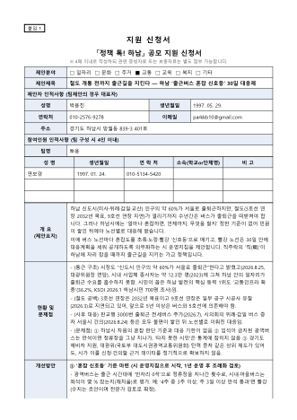
| HWPX | ../정책톡하남_신청서_최종_박용진.hwpx | 63KB | 신청서+개인정보 동의서 (지정 양식) |
| ../정책톡하남_신청서_최종_박용진.pdf | 4쪽 A4 · 301KB | 같은 내용 PDF |
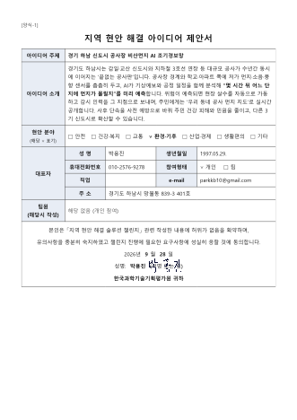
| KISTEP_지역현안챌린지/양식1_지역현안해결아이디어제안서.pdf | 4쪽 A4 · 204KB | 양식1 제안서 | |
| KISTEP_지역현안챌린지/양식2_개인정보수집이용동의서.pdf | 1쪽 A4 · 72KB | 양식2 개인정보 동의서 | |
| KISTEP_지역현안챌린지/양식3_참가자서약서.pdf | 1쪽 A4 · 78KB | 양식3 참가자 서약서 | |
| KISTEP_지역현안챌린지/양식4_제안아이디어제3자공개공유동의서.pdf | 1쪽 A4 · 73KB | 양식4 제3자 공개·공유 동의서 |
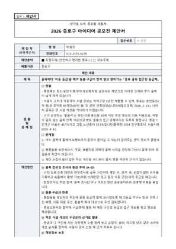
| HWPX | 종로구아이디어공모/박용진-종로 골목 접근성 등급제.hwpx | 35KB | 지정 양식(제안서+동의서) |
| 종로구아이디어공모/박용진-종로 골목 접근성 등급제.pdf | 3쪽 A4 · 133KB | 서명본 PDF |
| ZIP | 복지부_공공의료_카드뉴스/공공의료_카드뉴스_박용진.zip | 6개 파일 · 390KB | 카드뉴스 압축파일 (PNG 6장) |
| PNG | 공공의료_카드뉴스_01.png | 1080×1080px · 44KB | |
| PNG | 공공의료_카드뉴스_02.png | 1080×1080px · 60KB | |
| PNG | 공공의료_카드뉴스_03.png | 1080×1080px · 86KB | |
| PNG | 공공의료_카드뉴스_04.png | 1080×1080px · 65KB | |
| PNG | 공공의료_카드뉴스_05.png | 1080×1080px · 65KB | |
| PNG | 공공의료_카드뉴스_06.png | 1080×1080px · 68KB | |
| 복지부_공공의료_카드뉴스/서류/생성형AI활용내역및서약서_박용진.pdf | 2쪽 A4 · 146KB | 생성형 AI 활용내역 및 서약서 |
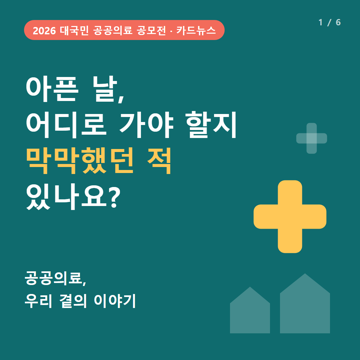
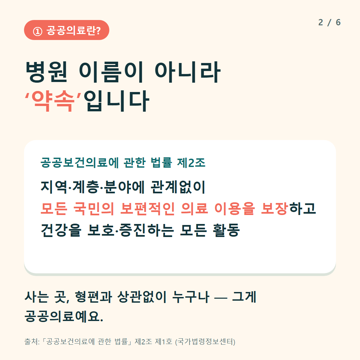
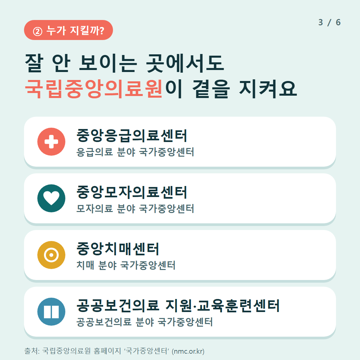
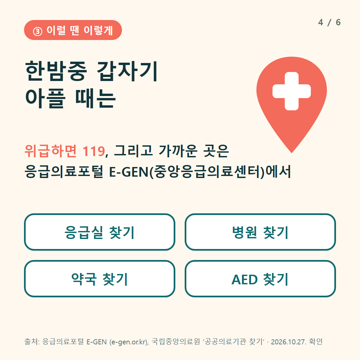
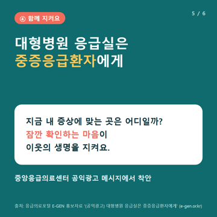
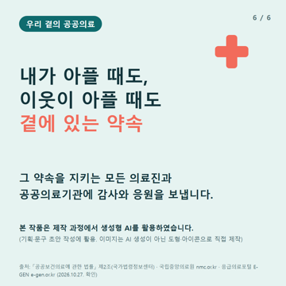
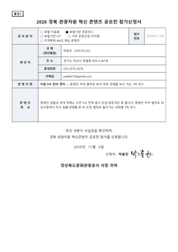
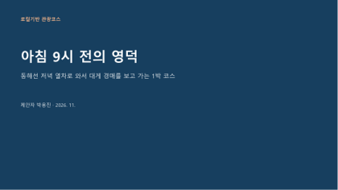
| 경북_로컬관광콘텐츠/박용진_아침9시전의영덕_참가신청서류.pdf | 8쪽 A4 · 302KB | 참가신청서·실행계획서·동의서·서약서 (1개 PDF) | |
| 등본(비공개, 미커밋) | 비공개 · 썸네일 없음 | git 제외 폴더 | |
| 경북_로컬관광콘텐츠/박용진_아침9시전의영덕_발표자료.pdf | 6쪽 · 132KB | 발표자료 |
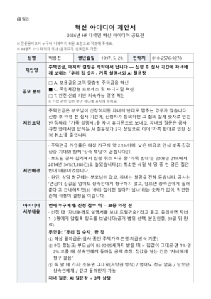
| ZIP | HF_대국민혁신아이디어/박용진_HF혁신아이디어공모_응모.zip | 4개 파일 · 268KB | 응모 압축파일 |
| HWPX | 박용진_혁신아이디어제안서_주택연금_가족설명서.hwpx | 45KB | |
| 박용진_혁신아이디어제안서_주택연금_가족설명서.pdf | 3쪽 A4 · 184KB | ||
| HWPX | 박용진_개인정보수집이용동의서.hwpx | 34KB | |
| 박용진_개인정보수집이용동의서.pdf | 1쪽 A4 · 68KB |
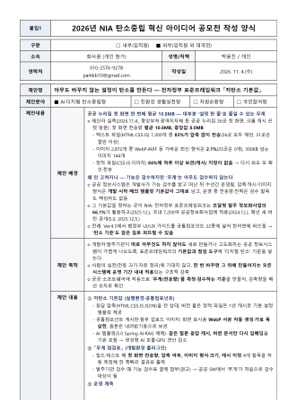
| NIA_탄소중립아이디어/붙임1_작성양식_저탄소기본값_박용진.pdf | 2쪽 A4 · 160KB | 붙임1 작성양식 | |
| HWPX | NIA_탄소중립아이디어/붙임1_작성양식_저탄소기본값_박용진.hwpx | 38KB | 붙임1 hwpx |
| NIA_탄소중립아이디어/붙임3_개인정보동의서_박용진.pdf | 1쪽 A4 · 74KB | 붙임3 개인정보 동의서 | |
| HWPX | NIA_탄소중립아이디어/붙임3_개인정보동의서_박용진.hwpx | 63KB | 붙임3 hwpx |
| NIA_탄소중립아이디어/세부설명자료_저탄소기본값_박용진.pdf | 2쪽 A4 · 158KB | 세부 설명자료 |
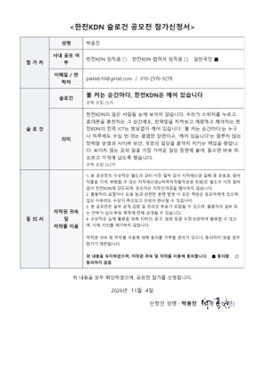
| 한전KDN_슬로건/박용진_한전KDN슬로건공모전_참가신청서.pdf | 2쪽 A4 · 120KB | 참가신청서(슬로건 기재) |
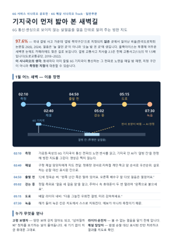
| 과기정통부_6G시나리오/빙판지도시나리오.pdf | 2쪽 A4 · 148KB | 시나리오 첨부 PDF |
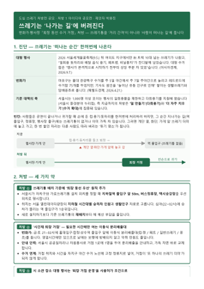
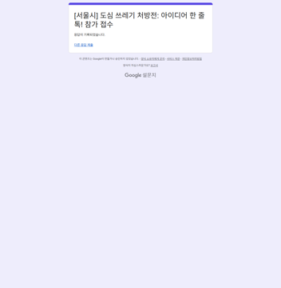
| 서울_도심쓰레기처방전/아이디어제안서_퇴장동선수거거점_박용진.pdf | 2쪽 A4 · 155KB | 아이디어 제안서 | |
| 서울_도심쓰레기처방전/제출서류_참가신청서·동의서·청렴서약서_박용진.pdf | 3쪽 A4 · 115KB | 참가신청서·동의서·청렴서약서 | |
| PNG | 접수확인/서울쓰레기처방전_한줄톡_구글폼_20261104.png | 1249×1277px · 35KB | 한 줄 톡 구글폼 접수 캡처 (제출물 아님, 확인용) |
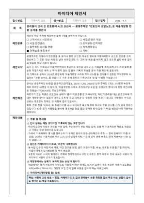
| 의정부도시공사_AI아이디어/박용진_AI혁신아이디어_제안서(번호인식 오답노트).pdf | 3쪽 A4 · 206KB | 제안서·신청서·동의서 (서명본) | |
| HWPX | 의정부도시공사_AI아이디어/박용진_AI혁신아이디어_제안서(번호인식 오답노트).hwpx | 55KB | 지정 서식 hwpx |
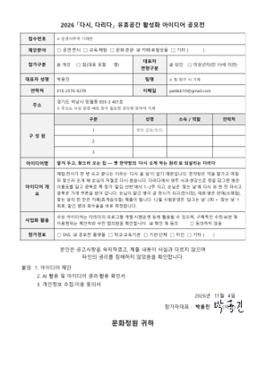
| 영주_다리다유휴공간/다시다리다_박용진_제출서류.pdf | 6쪽 A4 · 430KB | 제출서류 묶음 PDF (제안서+지정서식) |
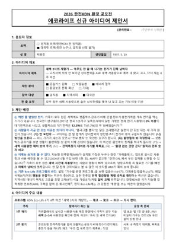
| 한전KDN_EcoLife/서식1_참가신청서_박용진.pdf | 1쪽 A4 · 110KB | 서식1 참가신청서 | |
| 한전KDN_EcoLife/서식2_개인정보수집이용동의서_박용진.pdf | 1쪽 A4 · 91KB | 서식2 개인정보 동의서 | |
| 한전KDN_EcoLife/서식3_에코라이프신규아이디어제안서_박용진.pdf | 2쪽 A4 · 178KB | 서식3 아이디어 제안서 |
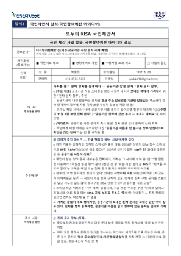
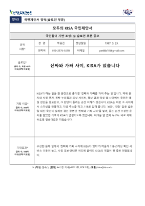
| KISA_모두의KISA/국민제안서_국민참여예산_진짜문자장부_박용진.pdf | 2쪽 A4 · 203KB | 메일1 국민제안서(국민참여예산) PDF | |
| HWPX | KISA_모두의KISA/국민제안서_국민참여예산_진짜문자장부_박용진.hwpx | 103KB | 메일1 국민제안서 hwpx |
| KISA_모두의KISA/국민제안서_슬로건_박용진.pdf | 1쪽 A4 · 115KB | 메일2 국민제안서(슬로건) PDF | |
| HWPX | KISA_모두의KISA/국민제안서_슬로건_박용진.hwpx | 101KB | 메일2 국민제안서 hwpx |
| KISA_모두의KISA/개인정보수집이용동의서_박용진.pdf | 1쪽 A4 · 113KB | 개인정보 동의서 (두 메일 공통) |
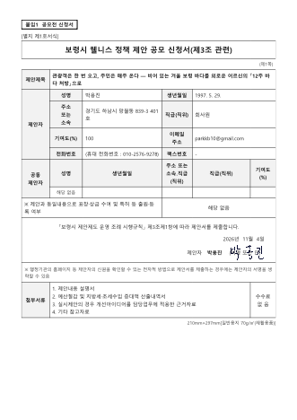
| 보령_웰니스정책제안/박용진-보령 겨울 바다 처방_제안서.pdf | 4쪽 A4 · 213KB | 제안서(신청서) 서명본 | |
| HWPX | 보령_웰니스정책제안/박용진-보령 겨울 바다 처방_제안서.hwpx | 96KB | 제안서 hwpx |
| 보령_웰니스정책제안/박용진-개인정보 수집·이용 동의서.pdf | 1쪽 A4 · 58KB | 개인정보 동의서 서명본 | |
| HWPX | 보령_웰니스정책제안/박용진-개인정보 수집·이용 동의서.hwpx | 48KB | 개인정보 동의서 hwpx |
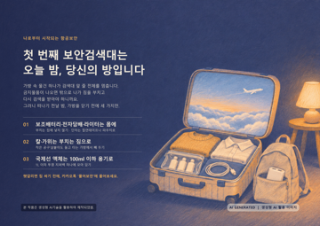
| ZIP | 한국공항보안_AI이미지/한국공항보안_AI이미지공모전_박용진.zip | 3개 파일 · 3.8MB | 응모 압축파일 |
| JPG | 작품_첫번째보안검색대는오늘밤당신의방_박용진.jpg | 4961×3508px · 3.6MB | |
| 참가신청서_개인정보동의서_박용진.pdf | 2쪽 A4 · 126KB | ||
| HWPX | 참가신청서_개인정보동의서_박용진.hwpx | 55KB |
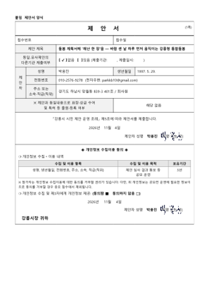
| 강릉_시민아이디어/박용진_강릉시민아이디어_제안서_재난한장.pdf | 4쪽 A4 · 223KB | 제안서 서명본 | |
| HWPX | 강릉_시민아이디어/박용진_강릉시민아이디어_제안서_재난한장.hwpx | 63KB | 제안서 양식 hwpx |
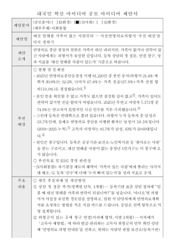
| 생명윤리정책원_ESG/1_참가신청서_박용진.pdf | 1쪽 A4 · 71KB | 참가신청서 | |
| 생명윤리정책원_ESG/2_제안서_대신말해줄가족이없는사람부터_박용진.pdf | 2쪽 A4 · 152KB | 제안서 | |
| 생명윤리정책원_ESG/3_개인정보동의서_박용진.pdf | 1쪽 A4 · 73KB | 개인정보 동의서 |
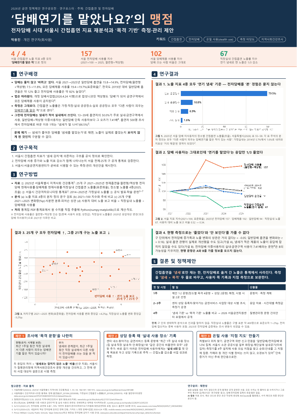
| 서울금연지원센터_금연정책연구/연구포스터_담배연기를맡았나요의맹점_박용진.pdf | 1쪽 A1 · 411KB | 연구 포스터 (A1) | |
| 서울금연지원센터_금연정책연구/신청서·참가동의서_박용진.pdf | 4쪽 A4 · 159KB | 서식1 신청서·초록 + 서식2 동의서 |
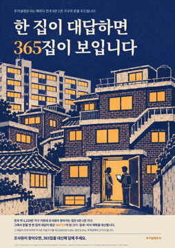
| JPG | 국토연구원_주거실태포스터/박용진-20261105-한집이대답하면365집이보입니다.jpg | 7016×9933px · 31.9MB | 포스터(A1 비율 7016×9933, 300dpi) |
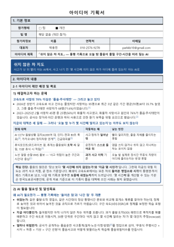
| 한국도로공사_AI아이디어/박용진_AI아이디어기획서_쉬지않은차지도.pdf | 3쪽 A4 · 225KB | 아이디어 기획서 | |
| 한국도로공사_AI아이디어/박용진_참가신청서_개인정보동의서.pdf | 2쪽 A4 · 108KB | 참가신청서·개인정보 동의서 | |
| HWPX | 한국도로공사_AI아이디어/박용진_참가신청서_동의서_기획서.hwpx | 58KB | 서식 hwpx (신청서+동의서+기획서) |
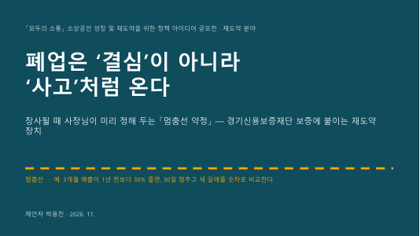
| ZIP | 경기신보_소상공인정책아이디어/작품파일_멈춤선약정_박용진.zip | 4개 파일 · 550KB | 작품 압축파일 |
| 참가신청서_박용진.pdf | 1쪽 A4 · 90KB | ||
| 아이디어제안요약서_박용진.pdf | 1쪽 A4 · 96KB | ||
| PPTX | 아이디어제안상세_멈춤선약정_박용진.pptx | 11장 · 148KB | |
| 아이디어제안상세_멈춤선약정_박용진.pdf | 11쪽 · 417KB | ||
| 경기신보_소상공인정책아이디어/개인정보수집이용동의서_박용진.pdf | 1쪽 A4 · 81KB | 개인정보 동의서 (별도 칸) |
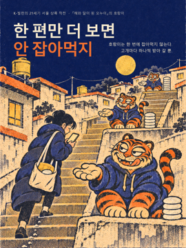
| PNG | 세종사이버대_K빌런/AI이미지_한편만더보면안잡아먹지_박용진.png | 1800×2400px · 7.9MB | 작품 이미지 |
| 세종사이버대_K빌런/지원서_AI이미지_한편만더보면안잡아먹지_박용진.pdf | 2쪽 A4 · 127KB | 지원서 |
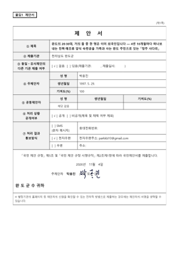
| 완도군_지방소멸아이디어/박용진-완도 양식 숙련공 정주 사다리_제안서.pdf | 4쪽 A4 · 189KB | 제안서(붙임1, 서명) | |
| HWPX | 완도군_지방소멸아이디어/박용진-완도 양식 숙련공 정주 사다리_제안서.hwpx | 90KB | 제안서 hwpx |
| 완도군_지방소멸아이디어/박용진-개인정보 수집·이용 동의서.pdf | 1쪽 A4 · 64KB | 동의서(붙임1-1, 서명) | |
| HWPX | 완도군_지방소멸아이디어/박용진-개인정보 수집·이용 동의서.hwpx | 50KB | 동의서 hwpx |
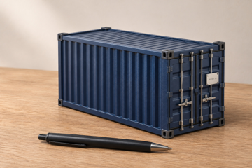
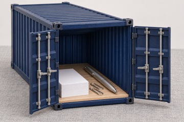
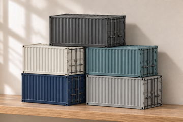
| JPG | 현대모비스_50주년굿즈/이미지/01_닫힌모습.jpg | 1536×1024px · 407KB | 굿즈 이미지(닫힌 모습) |
| JPG | 현대모비스_50주년굿즈/이미지/02_문을연모습.jpg | 1536×1024px · 514KB | 굿즈 이미지(문 연 모습) |
| JPG | 현대모비스_50주년굿즈/이미지/03_문쪽명판.jpg | 1536×1024px · 498KB | 굿즈 이미지(명판) |
| JPG | 현대모비스_50주년굿즈/이미지/04_다섯색쌓기.jpg | 1536×1024px · 395KB | 굿즈 이미지(다섯 색) |
| 현대모비스_50주년굿즈/굿즈설명_1977컨테이너_데스크박스_박용진.pdf | 4쪽 A4 · 1.9MB | 굿즈 설명·아이디어 스토리 | |
| 현대모비스_50주년굿즈/필수제출서류3종_참가신청서·위탁동의서·상품화활용동의서_박용진.pdf | 3쪽 A4 · 146KB | 필수 서류 3종(서명) |
| ZIP | 사회보장정보원_AI아이디어/제출/AI혁신 경진대회_개인(박용진).zip | 5개 파일 · 659KB | ZIP(신청서·제안서 hwpx/pdf·청렴서약서·동의서) |
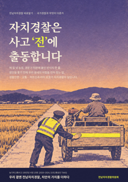
| JPG | 전남자치경찰_포스터/자치경찰은 사고 전에 출동합니다(박용진).jpg | 2079×2953px · 3.7MB | 포스터(176×250mm 300dpi, ZIP 안) |
| 전남자치경찰_포스터/제출서류(박용진).pdf | 2쪽 A4 · 142KB | 서식1·2(서명, ZIP 안) |
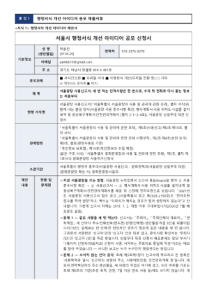
| 서울시_행정서식개선/행정서식개선_제안서·동의서·청렴서약서_서울광장사용신고서_박용진.pdf | 7쪽 A4 · 272KB | 서식1~4 (제안서·비교표·동의서·청렴서약서) | |
| HWPX | 서울시_행정서식개선/행정서식개선_제출서식_서울광장사용신고서_박용진.hwpx | 56KB | 제출서식 hwpx |
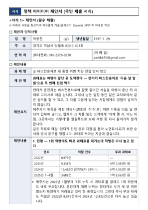
| 제주시_정책아이디어/박용진_제주시 정책 공모전_제안서·동의서.pdf | 5쪽 A4 · 186KB | 제안서(서식1)·동의서(서식2) PDF | |
| HWPX | 제주시_정책아이디어/박용진_제주시 정책 공모전_제안서·동의서.hwpx | 45KB | 같은 내용 hwpx |
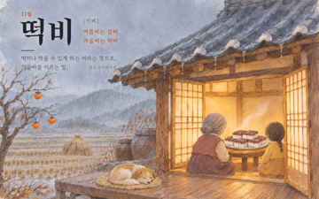
| JPG | 동아대_우리말달력/11월_떡비_박용진.jpg | 3000×1875px · 2.4MB | 달력 그림 |
| 동아대_우리말달력/신청서_개인정보동의서_박용진.pdf | 2쪽 A4 · 127KB | 신청서·개인정보 동의서 |
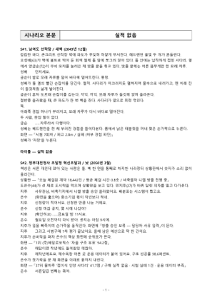
| 조달청_AI시나리오/AI시나리오_실적없음_박용진.pdf | 8쪽 A4 · 237KB | 시나리오 본문 8쪽 | |
| 조달청_AI시나리오/참가신청서_AI시나리오_박용진.pdf | 3쪽 A4 · 164KB | 참가신청서(서명) | |
| 조달청_AI시나리오/개인정보동의서_박용진.pdf | 2쪽 A4 · 140KB | 동의서·서약(서명) | |
| HWPX | 조달청_AI시나리오/참가신청서_시나리오본문_AI시나리오_박용진.hwpx | 53KB | 지정양식 hwpx |
| HWPX | 조달청_AI시나리오/개인정보동의서_박용진.hwpx | 63KB | 동의서 hwpx |
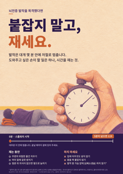
| JPG | 뇌전증협회_인식개선/제출/박용진_그림_붙잡지말고재세요.jpg | 3508×4961px · 3.3MB | 포스터(A3 세로 300dpi) |
| 뇌전증협회_인식개선/제출/박용진_그림_붙잡지말고재세요_신청서.pdf | 2쪽 A4 · 131KB | 신청서·동의서(서명) |
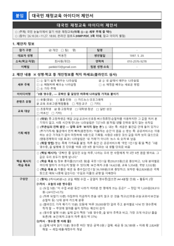
| 기획예산처_재정교육아이디어/박용진_대국민재정교육아이디어_참가신청서(0원 영수증).pdf | 3쪽 A4 · 270KB | 참가신청서(제안서 포함) |
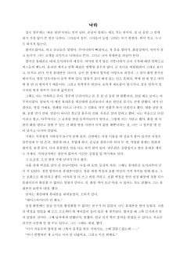
| DOCX | 한겨레21_손바닥문학상/낙하_박용진.docx | 8쪽 · 45KB | 원고 |
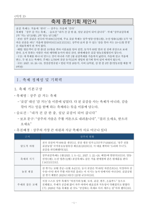
| ZIP | 상주시_대표축제아이디어/제출/박용진_상주시대표축제공모_제출서류.zip | 12개 파일 · 1.8MB | 제출서류 압축파일 (서식1~6, PDF+HWPX 12개) |
| 박용진_서식1_참가신청서.pdf | 1쪽 A4 · 103KB | ||
| HWPX | 박용진_서식1_참가신청서.hwpx | 52KB | |
| 박용진_서식2_제안서요약본.pdf | 2쪽 A4 · 169KB | ||
| HWPX | 박용진_서식2_제안서요약본.hwpx | 56KB | |
| 박용진_서식3_축제종합기획제안서_상주감거는축제.pdf | 24쪽 A4 · 991KB | ||
| HWPX | 박용진_서식3_축제종합기획제안서_상주감거는축제.hwpx | 444KB | |
| 박용진_서식4_개인정보수집이용동의서.pdf | 1쪽 A4 · 114KB | ||
| HWPX | 박용진_서식4_개인정보수집이용동의서.hwpx | 61KB | |
| 박용진_서식5_저작권및공모작활용동의서.pdf | 2쪽 A4 · 135KB | ||
| HWPX | 박용진_서식5_저작권및공모작활용동의서.hwpx | 71KB | |
| 박용진_서식6_공모전참가서약서.pdf | 1쪽 A4 · 83KB | ||
| HWPX | 박용진_서식6_공모전참가서약서.hwpx | 51KB |
| 마감 | 공모 | 상태 |
|---|---|---|
| 10/2(금) | 2026 AI 활용 아이디어 공모전 (과기정통부) | ⚠️ 기획서 PDF 완성, 공통서류 양식 미확보 — kfict.or.kr 접속 불가(서버 Not Found) → 양식 받아지면 채움, 또는 kfict1@kfict.or.kr· 문의 |
| 11/15(일) | 국민콜110 '일·일·공' 삼행시 (권익위) | ⏭ 패스 (11/4 사용자 결정 — 인스타 로그인 필요). 문구는 슬로건_11월_응모안.md 6번에 보관 |
| 11/8(일) | 서울중구시설관리공단 ESG 혁신 아이디어 (1인 1건) | ⏭ 서류 완성 — 서울중구시설관리공단_ESG/ 「매일 오던 회원이 안 보이면 먼저 묻는다」 — 패스 (11/4 사용자 결정 — 사이트 회원 로그인 필요). 서류는 보관 |
| 11/18(수) 17:00 | 국가유산청 국가무형유산 상설공연 아이디어 | ⏳ 문안 완성 — 국가유산청_무형유산공연아이디어/ 「웃으며 보내는 밤」 — 폼 11/9 09:00 열림 → 09:07 제출 예약(세션 유지 시) |
| 11/20(금) 17:00 | 안산 4·16 세월호참사 추모시설 명칭 | ⏳ 11/5 10:00 열리면 제출 — 「다시봄」 — 결과 2027-02-26 |
| 11/18(수) 17:00 | 자유기업원 제36회 시장경제칼럼 (대상 30만) | ⏳ 원고 완성 — 자유기업원_시장경제칼럼/ 「같은 값을 강제하자, 가격은 은어가 되었다」(1,997자) — 11/9 09:00 구글폼 오픈 후 제출. 수상 시 주민번호·12/4 ZOOM 시상식 |
| 11/13(금) 23:59 | 햇반 30주년 AI 공모전 (대상 1,000만) | ⏭ 패스 (사용자 결정 11/4). 4컷은 햇반AI공모/final/에 보관 |
| 10/30(금) | 강원도 「특별한 강원, 우리의 변화」 (도민 부문) | ⏸ 본인 실제 경험 필요(AI 생성물 그대로 제출 시 심사 제외, 표창만) — 체감 변화 몇 줄 주면 작성 |